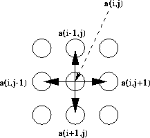

Successive over relaxation is used in many HPF kernels:
DO j = 2,n-1
DO i = 2,n-1
a(i,j)=(omega/4)*(a(i,j-1)+a(i,j+1)+ &
a(i-1,j)+a(i+1,j))+(1-omega)*a(i,j)
END DO
END DO
The calculation of a(i,j) uses its 4 neighbours.

BLOCK distribution in both dimensions will be the most effective distribution here.
For more information, click here

Now try this question